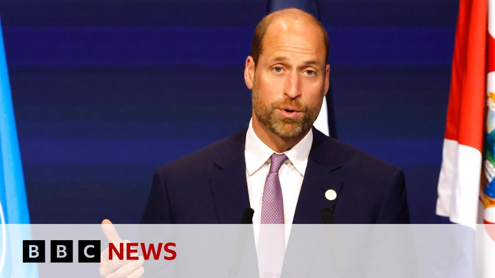

【威廉王子警告海洋生物“在我们眼前减少” | BBC新闻】
Summary: Prince William calls for urgent action to protect and restore oceans, emphasizing the need for global cooperation, innovation, and funding to address rising temperatures, plastic pollution, and overfishing ahead of the UN Ocean Conference in Nice.
摘要： 威廉王子呼吁采取紧急行动保护和恢复海洋，强调在联合国海洋大会前夕，全球需通过合作、创新和资金应对气温上升、塑料污染和过度捕捞等问题

⏱️ Estimated Reading Time: 11 min
📚 六级生词 📚 雅思生词 📚 托福生词 📚 GRE生词 📚 视频里的生词
The Prince of Wales has said that an urgent wakeup call is needed for what's going on with the planet's oceans.
威尔士亲王表示，地球海洋现状亟需敲响警钟。
Speaking ahead of a UN conference on ocean protection, which is due to start in the southern France, French city of Nice on on Monday, Prince William said it could no longer be a matter of out of sight, out of mind.
威廉王子在联合国海洋保护会议前夕发言称，海洋问题不能再“眼不见为净”。该会议将于周一在法国南部城市尼斯开幕。
Let's take a listen.
让我们听听他的讲话。
If we are to reach our goal, we urgently need to take bold action to protect and restore our planet.
若要实现目标，我们亟需采取大胆行动保护和修复地球。
We must realize the potential of the blue economy for our ecosystems, our economies, and our communities.
我们必须认识到蓝色经济对生态系统、经济和社区的潜力。
With creativity, ingenuity, investment, and support, we can unlock exciting innovations and solutions that protect our planet, create jobs, sustain livelihoods, and encourage prosperity.
凭借创造力、智慧、投资和支持，我们能发掘激动人心的创新方案，保护地球、创造就业、维持生计并促进繁荣。
This challenge is like none that we have faced before.
这一挑战前所未有。
But I remain an optimist.
但我仍持乐观态度。
I believe that urgency and optimism have the power to bring about the action needed to change the course of history.
我相信紧迫感与乐观精神能催生改变历史进程的行动。
I'm an optimist because as the founder of the Earthshot Prize, I see the incredible examples of the ideas, innovations, and technologies that are harnessing the power of the ocean whilst protecting its vitality.
我之所以乐观，是因为作为“为地球奋斗奖”创始人，我见证了利用海洋力量并保护其活力的非凡创意、创新与技术。
Prince Williams full speech is available on our website, but here are a few of the points he made.
威廉王子的完整演讲可在我们网站查看，以下是部分要点。
He said that while the world's nations have committed to protecting 30% of the land and sea by the year 2030, so far only 17% of the land and just 3% of the ocean have been fully protected.
他指出，尽管各国承诺到2030年保护30%的陆地和海洋，但目前仅17%的陆地和3%的海洋得到充分保护。
He also noted three of the big issues affecting the oceans.
他还提到影响海洋的三大问题。
Rising temperatures, plastic pollution, and over fishing.
气温上升、塑料污染和过度捕捞。
Our reporter Pierre Antoine Deni was at the event at the Grimaldi Forum in Monaco for us.
本台记者皮埃尔·安托万·德尼在摩纳哥格里马尔迪论坛现场报道。
He gave me this analysis of Prince William's speech.
他对威廉王子的演讲作出如下分析。
Yeah. So, it was a very strong sense of urgency but also optimism from from the Prince of Wales there in this in this speech that was described as a landmark speech.
是的，威尔士亲王此次被誉为里程碑式的演讲中，既透露出强烈的紧迫感，又不失乐观。
and he's true that some of the words that we've been hearing were very very strong in his call to action and this idea that we all in this together wherever we are whoever we are.
他确实以非常有力的言辞呼吁行动，强调“无论身处何地、身份如何，我们都休戚与共”。
Um for some it's already an existential threat for for others it is important to act because we owe it to the people who are already feeling the burnt of climate change.
对一些人而言这已是生存威胁，对另一些人来说，行动是因我们亏欠那些正承受气候变化之苦的人们。
This is a very strong call but also a call that's been repeated over and over again by both Prince William and King Charles over the uh over the years.
这是非常强烈的呼吁，也是威廉王子和查尔斯国王多年来反复强调的。
And uh you know we've been hearing about how we need to act together with urgency and optimism while we still have the chance because as I said for some nations around the world Pacific Islands for instance this the threat of climate change and sea level rise is already just there to the extent that some already thinking about drawing plans to relocate themselves as climate refugees.
我们不断听到要以紧迫感和乐观精神抓住机会共同行动，因为对太平洋岛国等地区而言，气候变化与海平面上升的威胁已迫在眉睫，甚至有人开始制定计划成为气候难民。
This is just one of the many issues that Prince William has touched upon and but he also looked at the optimism about the innovation that is around this with different issues surrounding our oceans and what can be done with the right incentives but also the right funding and PA he's of course speaking ahead of the UN ocean conference starting on Monday in Nice in France.
这只是威廉王子提及的众多问题之一，但他也展望了围绕海洋问题的创新乐观前景，指出正确激励与资金能带来的改变。他此次演讲正值联合国海洋大会周一于法国尼斯开幕前夕。
Um what can we what can we expect from the conference?
我们对大会有何期待？
What kind of commitments can we expect?
能期待哪些承诺？
So there should be by the end of this conference hopefully by the beginning of it according to the French officials the ratification the full ratification of a treaty about the high seas.
法国官员表示，大会期间（理想情况下初期）应能完成《公海条约》的全面批准。
So it's to create some sort of governance around the international waters and protected marine areas to be increased uh considerably.
该条约旨在建立国际水域治理机制，并大幅增加海洋保护区。
There is this target that has been signed a few years ago around the idea that 30% of seas and protected land and close to marine marine life should be protected.
数年前签署的目标要求保护30%的海洋、邻近陆地及海洋生物。
At this stage, it's only 8%.
目前仅完成8%。
So there's still a long way to go and Prince William echoed that in that speech as well about how this is the ambition.
威廉王子在演讲中也呼应了这一远大目标与现实差距。
This is the target, but it needs to happen now.
目标明确，但必须立即行动。
And there are real questions around this conference that kickstarts on Monday with if Donald Trump isn't here calling climate change a hoax, how can there be actual incentive and actual implementation and funding sur around these programs if the US isn't in it?
大会周一开幕之际，现实问题浮现：若特朗普缺席并称气候变化是骗局，美国不参与，这些计划的激励、实施与资金从何而来？
The prince's speech comes a day after he released on his social media accounts his own interview with the veteran broadcaster Sir David Atenburgh in which they spoke about the future of the planet seas.
王子演讲前一天，其社交媒体发布了与资深播音员大卫·爱登堡爵士的访谈，探讨地球海洋未来。
In today's speech, Prince William paid tribute to Sir David's new film Ocean, saying it made the most compelling argument for immediate action he has ever seen.
今日演讲中，威廉王子盛赞大卫爵士新片《海洋》，称其呈现了最令人信服的行动理由。
Watching human activity reduce beautiful sea forests to barren deserts at the base of our oceans is simply heartbreaking.
目睹人类活动将美丽海底森林变为荒芜沙漠令人心碎。
For many, it is an urgent wakeup call to just what is going on in our oceans.
对许多人而言，这迫切揭示了海洋现状。
But it can no longer be a matter of out of sight, out of mind.
但不能再“眼不见为净”。
The need to act to protect our ocean is now in full view.
保护海洋的行动需求已清晰可见。
As ever, Sir David leaves us with a sense of optimism that all is not lost.
一如往常，大卫爵士传递出“为时未晚”的乐观信念。
He believes change is possible.
他相信改变可能发生。
Put simply, the ocean is under enormous threat, but it can revive itself, but only if together we act now.
简言之，海洋面临巨大威胁，但仍可复苏——前提是我们立即共同行动。
Chris Boer is an oceanographer and scientific director of the Tara Ocean Foundation.
克里斯·伯尔是海洋学家兼塔拉海洋基金会科学主任。
He's also in Monaco and gave me his reaction to Prince William's speech.
他也在摩纳哥，向我分享了对威廉王子演讲的看法。
Yeah. Well, the uh the the the the damage causing uh to the deep sea is very concerning and what may potentially happen in the future is even more concerning.
是的，深海遭到的破坏令人忧心，未来潜在影响更甚。
There's a lot of interest in deep sea mining, seabed mining, opening that up as soon as possible.
深海采矿、海底采矿备受关注，各方急于尽快开发。
There's a lot of damage being caused by bottom trolling uh due to industrial fishing.
工业捕捞的底拖网造成严重破坏。
Um, often times these are done in areas beyond national jurisdiction, so called the high seas.
这些活动常发生在国家管辖范围外的公海。
Uh, there is indeed a treaty being put in place that is currently being ratified, which we hope will protect those areas.
目前正在批准的公海条约有望保护这些区域。
Uh, but it's incredibly important that that we give protection to these areas and perform re more research to understand exactly what is happening in these high seas areas and what they do for the well-being of our entire planet.
至关重要的是保护这些区域并加强研究，以明确公海现状及其对全球福祉的作用。
You know, just because the ocean is far away from our homes doesn't mean that the oceans don't affect our daily lives.
海洋虽远离家园，却深刻影响日常生活。
They uh they're in fact very important for regulating the climate, regulating the weather, and assuring the health, the well-being of the entire planet.
它们对调节气候、天气及保障地球健康至关重要。
And uh at the end of this conference next week in Monaco uh in Nice, we expect a political declaration to be signed by the countries attending.
下周尼斯会议结束时，与会国预计将签署政治宣言。
It's nonbinding.
宣言不具约束力。
But how could it be helpful for scientists like yourself?
但对您这样的科学家有何助益？
Well, I mean, first of all, we have this uh the fact that this ocean event is happening um uh organized by the UN is a very clear sign that that there is a realization of the urgency of the issue.
首先，联合国主办此次海洋会议，本身就表明了对问题紧迫性的认知。
Um there is um important time being given to what the ocean does for the well-being of our planet and there's also time being given to the biodiversity within the oceans and what biodiversity helps the oceans to perform.
会议将重点讨论海洋对地球福祉的作用、海洋生物多样性及其功能。
Most of that biodiversity is microscopic.
多数生物多样性来自微生物。
It's the plankton and it's those plankton that assure the the health of the whole system.
浮游生物维系着整个系统的健康。
So there's a good urgent realization about this and in many cases there really is scientific clarity on how things work and what we need to do to find solutions.
人们已紧迫认识到这点，且科学上对机制和解决方案已有清晰认知。
Um now what we need is is political courage to stand up and really ensure that these actions are taken forward very urgently very quickly notably in the high seas which are beyond you know the the national jurisdictions.
当前需要政治勇气来迅速推进行动，尤其是在国家管辖外的公海领域。
We need, you know, international programs to to help address this urgent.
我们需要国际项目来应对这一紧迫问题。